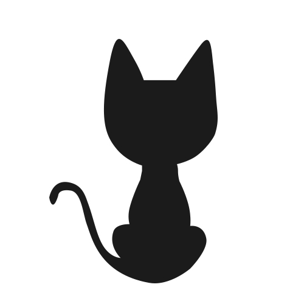

about
Bean Panda
软件小白，江山点墨
Start
Archiv
Über
RSS
{title}
{date}
{tags}
about

name：
Bean
email：
xvbean123@163.com
github：
Xbean1028
weibo：
大白守护者
twitter：
CSDN
Letzte
特征检测和特征提取算子
双目测距的基本原理
计算机视觉笔记
JavaScript 简易基础
我的demo
Visual Studio 2019 Professional激活码
我的Android开发第一个例子
Stereolabs ZED - YOLO 安装
ubuntu18.04LTS+Anaconda3+cmake编译安装opencv3.4.3
数据库系统复习
Tags
CSDN迁移
Archiv
August 2019
July 2019
June 2019
May 2019
April 2019
Blogroll
CSDN
github